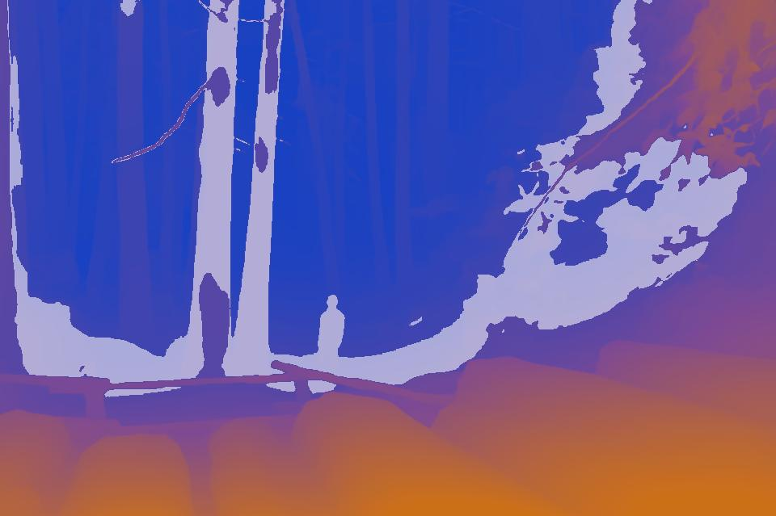

Lens Blur
Blurs the photo as a wide-open lens would, from how far away each part is: the background melts away, a foreground can go soft too, and bright points turn into bokeh. Use it to make a subject stand out from a busy scene, or to give a phone or small-sensor photo the look of a fast lens.
Apply and Blur Amount
Tick Apply to turn Lens Blur on. The first time on a photo, Atelier focuses on its subject for you (see Focal Range). Blur Amount sets how strong the blur is for the parts farthest from the focus: 100 is about the blur of a portrait lens wide open. The blur is measured against the photo's size, so the preview and an export look the same.
Bokeh
The shape that bright out-of-focus points take, as in Lightroom. Hover over a shape for its name.
- Circle
- Round and even, like a modern lens wide open. The default.
- Bubble
- Round with a bright rim, like a soap bubble.
- 5-Blade
- Five-sided, like a lens with a five-blade aperture stopped down a little.
- Ring
- Bright rings with a dark middle, like a mirror (catadioptric) lens.
- Anamorphic
- Tall ovals, like an anamorphic cinema lens.
- Cat Eye
- Cuts the shapes toward the photo's edges into cat's-eye shapes, as many older and fast lenses do. Higher gives the swirl a stronger pull.
- Boost
- Brightens the brightest highlights (those near white) before they are blurred, so they spread as bright bokeh instead of dull gray spots. It leaves the rest of the photo's light tones alone.
Focal Range
The part of the photo kept sharp, as two depths from 0 (the nearest part of the photo) to 100 (the farthest). The strip above the sliders runs from near (white) to far (black) with the range outlined. Parts outside the range blur more the farther they are from it, in front of it as well as behind it, as a real lens does.
| ⌖ Focus picker | Click the button, then click the part of the photo to keep in focus. The range becomes the depths around that spot. The picker stays out, so another click moves the focus; press Esc or click the button again when done. |
| Subject | Keeps the photo's subject in focus, as Select Subject finds it. This is also what Apply does the first time. |
| Near, Far | Fine-tune the range by hand. A narrow range gives a thin plane of focus; a wide one keeps more of the scene sharp. |
Refine: Focus and Blur
The depth model is good but not perfect: a strand of hair, a hand held out, or a sign at the subject's side can land at the wrong depth. Refine fixes that, like Lightroom's Focus and Blur brushes, with the full set of selection tools and edge controls.
- Click Refine…. Lens Blur's refine panel opens on the photo, like Masking, with Done to close it.
- Add to Focus marks what stays sharp whatever its depth; Add to Blur what blurs fully. Pick how: Brush to paint (⌥ erases, [ and ] change the size), Select People (starts with Entire Person and Fine Edges, so hair is included), Select Subject, Select Object, a gradient, or a color or luminance range. Subtract cuts a part out.
- Select a part to refine its edge: Feather, Refine Edge, Grow/Shrink and Fine Edges, the same controls as in Masking. Select the area itself for its Amount (how fully it keeps sharp or blurs) and Invert. Show Overlay (O) tints it on the photo.
The Focus and Blur areas belong to Lens Blur alone: they never show in Masking and never change the photo's look. The panel's switch turns them off with the blur, the eye beside an area hides it, and each change is one undo step. A preset's Lens Blur part carries them.
Visualize Depth
Shows the photo's depth instead of the photo: warm colors are near, cool colors far, and the parts inside the Focal Range are drawn lighter. Use it to see what the focus covers while you move Near and Far. It turns off when you leave the panel.

Up close
Lens Blur is meant to look like a lens, not a phone's portrait mode, even at 100%. Each pixel's blur grows smoothly with its distance from the focus: the ground just behind the subject is a little soft, farther away it melts, and the edge between subject and background stays as fine as in the photo. Atelier blurs at the full size of the photo where the blur is small and on smaller copies only where it is large enough that nobody could tell, so zooming in never shows a band or a halo where the blur changes.
The depth model
Lens Blur uses the same depth model as Depth Range and Select Sky, Depth Anything V2 Small (Apache 2.0 license). If it isn't downloaded yet, the panel offers it (50 MB); it then runs on your Mac in under a second per photo, and photos are never sent anywhere. While the depth is being found the photo shows without the blur for a moment.
Good to know
- Lens Blur works on the whole, uncropped photo in linear light before the tone and color panels, so highlights spread as light does and your other edits apply to the blurred photo. Masks still select from the sharp photo.
- Edges of the subject stay as sharp as in the photo; something in front of the subject blurs over it, as through a lens. Where the depth model is unsure (fine hair, thin branches) the edge can blur a little: add a Focus area with Select People.
- Turn the panel off with the switch in its header to compare, as with any panel.
- New presets have a Lens Blur part, unticked by default, because the focus belongs to the photo it was set on. Copy and Paste Settings and Sync Settings carry it.